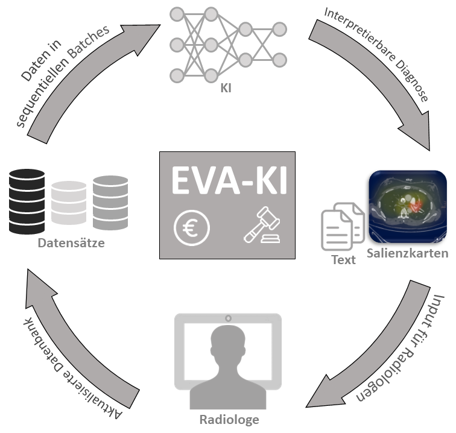
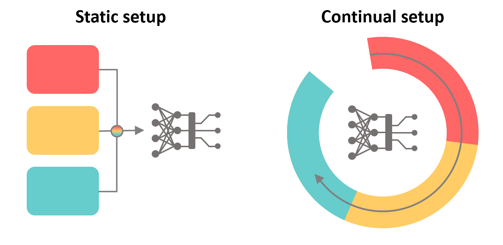

Im Rahmen des Projektes wird eine Leichtgläubigkeitsanalyse durchgeführt, um zu untersuchen, inwieweit sich sowohl unerfahrene als auch erfahrene Radiologen auf die Vorhersagen neuronaler Netzwerke verlassen. Klinische Metriken und Unsicherheitsschätzungen werden während des gesamten Prozesses überwacht und Radiologen als zusätzliche Informationen vermittelt.

Eine Lungenembolie bezeichnet die Verstopfung eines Blutgefäßes in der Lunge bzw. dem Lungenkreislauf. Sie ist potentiell lebensbedrohlich, bei rechtzeitiger Erkennung ist die Prognose jedoch sehr gut.

Bisher werden medizinische Befunde vor allem in der Form von Freitext erfasst. Smart Reporting hat ein innovatives System entwickelt, das relevante medizinische Entscheidungen gezielt abfragt und so eine tiefgreifende Standardisierung erreicht.

Unter kontinuierlichem Lernen versteht man den sequentiellen Empfang von kleinen Datenmengen aus unterschiedlichen Quellen. Im Gegensatz zum üblichen Arbeitsablauf können kontinuierlich lernende Algorithmen nacheinander eintreffende Daten verarbeiten, die eventuell nur für einen kurzen Zeitraum verfügbar sind.

Elementarer Bestandteile des Projekts sind die Entwicklung und Verifizierung eines wirtschaftlichen Geschäftsmodells zur Verbreitung der Plattform, und eine Analyse der ethischen Aspekte.